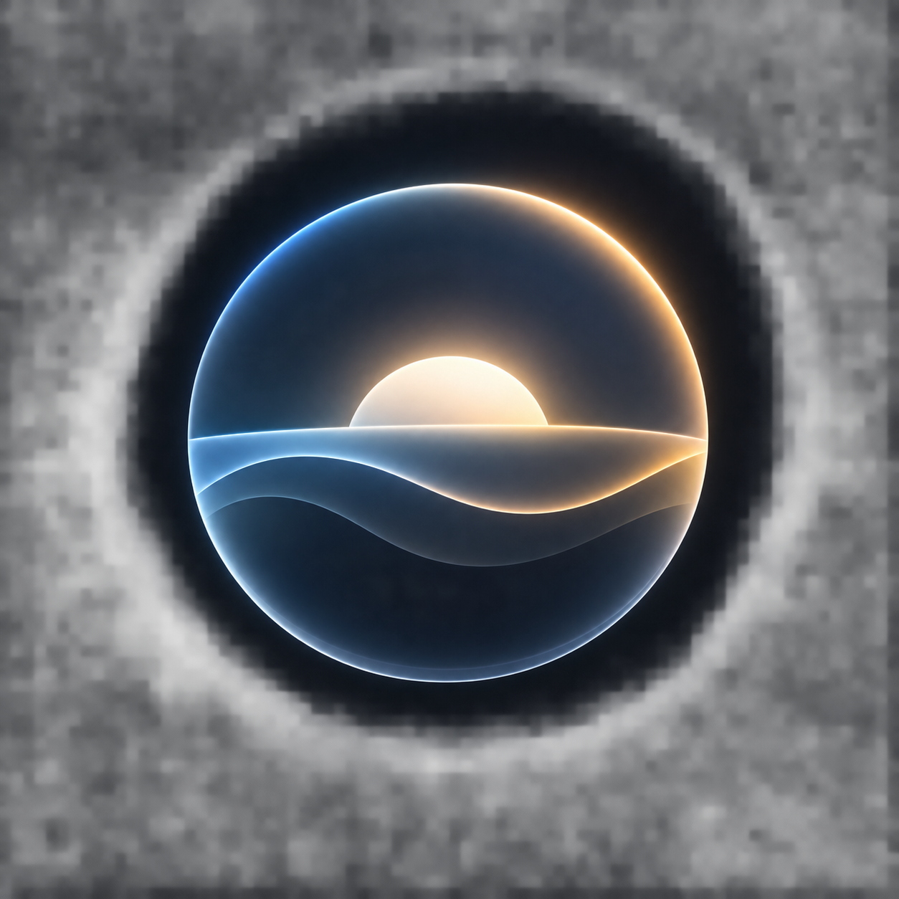

Atmosphere ambient sound mixer
Atmosphere combines 155 ambient tracks, 126 cinematic video loops and Live Weather matching across 29 soundscapes for focus, sleep, study and relaxation. Explore rain, forests, beaches, city sounds, brown noise, night drives, quiet rooms and more.
JavaScript is required for interactive audio and video playback.